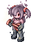
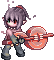
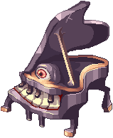
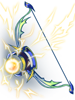
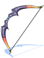
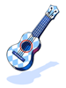
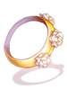
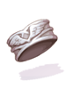

Dreams and Shadows

|
| Spanish |
| This quest or instance is repeatable. | ||
|---|---|---|
| Cooldown | Tickets Available | |
|
Resets at 0:00 |
Solo: 0 | Party: 0 |
Walkthrough
- Go to the entrance by using Warper, then Instances > Dreams and Shadows. Talk to Lecce and then Eugenie with a party to start the instance.
- Party leader needs to talk with Lecce inside to begin and spawn a wave of mobs. Kill these mobs in order to proceed.
- A red mushroom will spawn in the room. Approach it to summon more mobs. After triggering all mushrooms and killing all mobs, you can advance to the next room.
- The next rooms have the similar sequence as step 3. Approach the red mushroom(s) and kill the mobs to advance to the next room.
- After several rooms, you will see 3 Ferres. Talk to them to spawn Jitterbug. In the fight with Jitterbug, kill every Black Mushroom that spawns, Campanella will tell you if a Black Mushroom spawns. This is to mitigate the damage from poison cloud coming after the Black Mushroom.
- Keep doing step 3-5 until the last room where Ferres will spawn Awakened Ferre. Awakened Ferre also uses the same Black Mushroom mechanic so make sure to kill it to make the fight easier.
Enemies
| Image | Name | Level | HP | Size / Race / Element |
|---|---|---|---|---|
| Ferre | 125 | 48,430 | Small / Demon / Earth 2 | |
|  | Ferre | 126 | 40,718 | Small / Demon / Water 2 |
|  | Ferre | 127 | 53,290 | Small / Demon / Water 2 |
| Ferre | 128 | 52,280 | Small / Demon / Earth 2 | |
|  | Jitterbug | 135 | 2,614,000 | Large / Demon / Undead 2 |

|
Awakened Ferre |
140 | 10,000,000 | Large / Demon / Undead 3 |
Rewards
Drops
The following drops are considered party drops:
- Monster(s) show them when you use @mi, if it isn't a MVP, right after their normal drops.
- When you use @wd for them, if it isn't a MVP, you will have a warn about them.
- Items are rolled individually per party member.
- Equipment will drop pre-identified.
- Any type of Bubble gum will not affect the drop rate of these items.
| Image | Name | Party Drops |
|---|---|---|
| Jitterbug |
| |
|
|
Awakened Ferre |
|
Note: Items listed more than once can drop simultaneously. That means you can obtain up to 3 Tooth of Jitterbug per Jitterbug and up to 2 Tooth of Jitterbug from Awakened Ferre.
Equipment Exchange
At the end of the instance after killing Awakened Ferre, you can exchange 25 Tooth of Jitterbug with Pimpernel for a random equipment listed below.
| Image | Name | Type | Description |
|---|---|---|---|
|  | Bow of Storm [1] | Bow | 160 ATK. Ranged Damage +30%. Reduce Cooldown of Severe Rainstorm by -2 seconds, while increasing the SP cost by +15. |
|  | Gigantic Bow [1] | Bow | 195 ATK. Range Damage +40%. Decreases ASPD (delay after attack +15%), Hit -50. Ranger Only. |

|
Old Dancer's Floral Mic [2] | Whip | 160 ATK. Reduces SP cost of Moonlight Serenade by -20.
When equipped with Old Dancer's Floral Bracelet: |
|  | Old Bard's Ukulele [2] | Instrument | 160 ATK. Reduces SP cost of Windmill Rush by -20.
When equipped with Old Bard's Wing Ring: |
|  | Old Dancer's Floral Bracelet [1] | Accessory | Decreases Variable Cast Time by 25%. Wanderer Only. |
|  | Old Bard's Wing Ring [1] | Accessory | Decreases Variable Cast Time by 25%. Maestro Only. |

|
Pendant of Chaos | Accessory | ATK +6%. Resistance to Shadow Element +5%. Grants immunity to Chaos. Has a chance to inflict Chaos on enemies when physically attacking. Has a chance to inflict Chaos in 11x11 AoE when being attacked. INT -6. When equipped with Pendant of Harmony: |

|
Pendant of Harmony | Accessory | MATK +6%. HP and SP Recovery +50%. Resistance to Holy element +5% Has a chance to cast Renovatio Lv1 when physically attacking. Has a chance to cast Sanctuary Lv3 when being physically attacked. STR -5. When equipped with Pendant of Chaos: |
You can also ask Pimpernel to combine Pendant of Chaos and Pendant of Harmony to receive a Pendant of Maelstrom.
| Image | Name | Type | Description |
|---|---|---|---|

|
Pendant of Maelstrom | Accessory | ATK +6%. MATK +6%. All stats +1. Magic attacks from enemies cast Level 1 Auto Spell Maelstrom. |
Cards
| Card | Type | Effects |
|---|---|---|
| Accessory (Right) Card | Physical damage against Neutral property monsters +20%.
If equipped with Singing Ferre Card, Metallic Sound damage +50%. | |
| Accessory (Left) Card | Magical damage against Neutral property monsters +20%.
If equipped with Playing Ferre Card, Reverberation damage +50%. | |
| Headgear Card | Reduce damage received from Neutral property monsters by 10%. MaxHP +500.
If equipped with Playing Ferre and Singing Ferre Cards, when dealing physical/magical damage, has a chance to transform into Awakened Ferre for 6 seconds. While transformed, restore 2000 HP, increase physical and magical damage against Neutral property monsters by 200%. | |
| Armor Card | If equipped by Bard or Dancer classes, MATK +15 every refine level. |
Enchanting
You can enchant the weapons you obtain from the instance with the Weapon's Master at the entrance (dali02 114/95).
Weapons without enchants, obtained from Nightmarish Jitterbug cannot be enchanted and, as such, cannot be rerolled. You can still use them as fodder for rerolling other weapons.
The weapon that will get its enchants re-rolled must be equipped. Enchanting the weapon keeps the refinement level and has no chance to break.
A full re-roll of all 3 enchants will have the following cost:
- 1 Black Jitterbug Tooth
- 1 Tooth of Jitterbug
- 1 any weapon obtained from Dreams and Shadows or Nightmarish Jitterbug
- 100,000 Zeny
Keeping a single enchant safe and re-rolling the other two will have the following cost:
- 1 Black Jitterbug Tooth
- 1 Tooth of Jitterbug
- 1 of the same weapon being re-rolled
- 2,000,000 Zeny
Enchants
| First Slot | Second Slot | Third Slot |
|---|---|---|
|
|
|
References for [element] and [race]
| Enemy [element]'s | Enemy [race]'s |
|---|---|
|
|